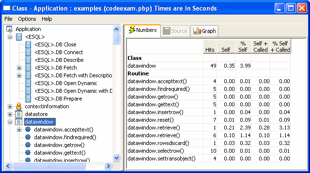
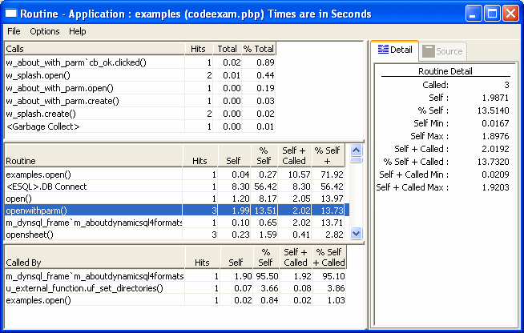
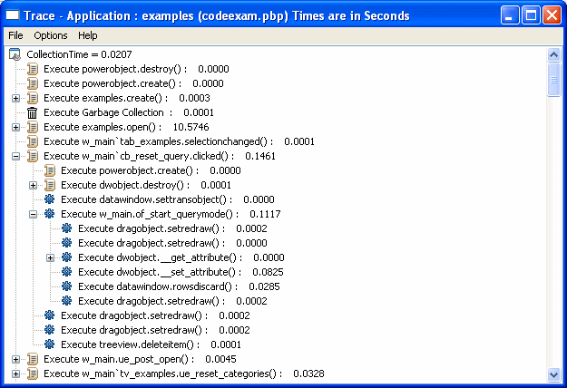

Previous Next
Analyzing trace information using profiling tools
After you have created a trace file, the easiest way to analyze
it is to use the profiling tools provided on the Tool tab of the
New dialog box. There are three tools:
- The Profiling Class View shows information about the objects
that were used in the application
- The Profiling Routine View shows information about
all the routines (functions and events) that were used in the application
- The Profiling Trace View shows the elapsed time
taken by each activity in chronological order
Using the profiling tools as a model
Even if you want to develop your own analysis
tools, using the profiling tools is a good way to learn about these
models and about profiling in PowerBuilder. When you are ready to
develop your own tools, see "Analyzing trace information
programmatically" for an overview of the approaches you
can take.
Profiling Class View
The Class view uses a TreeView control to display statistics
for PowerBuilder objects, their functions, and their events. It
displays statistics only for those objects that were active while
tracing was enabled. The Class view has three tabs:
- Numbers Shows statistics only
- Graph Shows statistics in a bar graph
- Source Shows statistics and source code for those routines that originated
in PowerScript source
For each object, the Class view shows all the routines called
from each class with the number of times each routine was called
(hit) as well as timing information for each call. The following
illustration shows part of a Class view. Embedded SQL commands are shown as being called
from a pseudo class called ESQL.

The Class view includes both PowerBuilder system-level objects
(such as DataWindow and SystemFunction) and user-defined classes
(such as windows and user objects). Each top-level node is a PowerBuilder
class. As you expand the TreeView control, each node represents
a routine and each subnode represents a called routine.
The Class view uses the call graph model to show cumulative
statistics for objects, routines, and called routines. The information
displayed on the right side of the display differs depending on
the current node on the left.
Table 33-3: Statistics displayed in the Profiling Class View by node
| Current node |
Statistics displayed |
|---|
| Application |
Statistics for each object |
| Object |
Cumulative statistics for the object
and detailed statistics for the object's routines |
| Routine |
Cumulative statistics for the routine
and detailed statistics for called routines |
You can sort items on the right by clicking the heading.
Class view metrics
The Class view displays five metrics. The profiling tool accesses
these metrics from instances of the ProfileCall and ProfileRoutine
objects. The time scale you specified in the Preferences dialog
box determines how times are displayed.
Table 33-4: Metrics in the Profiling Class View
| Metric |
What it means |
|---|
| Hits |
The number of times a routine executed
in a particular context. |
| Self |
The time spent in the routine or line
itself. If the routine or line was executed more than once, this
is the total time spent in the routine or line itself; it does not
include time spent in routines called by this routine. |
| %Self |
Self as a percentage of the total time
the calling routine was active. |
| Self+Called |
The time spent in the routine or line
and in routines or lines called from the routine or line. If the
routine or line was executed more than once, this is the total time
spent in the routine or line and in called routines or lines. |
| %Self+Called |
Self+Called as a percentage
of the total time that tracing was enabled. |
 About percentages The percentages captured in the trace file are based on the
total time tracing was enabled. Because an application can be idle
(while displaying a MessageBox, for example), percentage metrics
are most meaningful when you control tracing programmatically, which
can help to minimize idle time. Percentages are least meaningful
when you create a trace file for a complete application.
About percentages The percentages captured in the trace file are based on the
total time tracing was enabled. Because an application can be idle
(while displaying a MessageBox, for example), percentage metrics
are most meaningful when you control tracing programmatically, which
can help to minimize idle time. Percentages are least meaningful
when you create a trace file for a complete application.
Profiling Routine View
The Routine view displays statistics for a routine, its calling
routines, and its called routines. It uses multiple DataWindow objects
to display information for a routine:
- Called routines The top DataWindow lists functions and events called by the
current routine.
- Current routine The middle DataWindow and the DataWindow on the right highlight
the current routine and show detailed statistics.
- Calling routines The bottom DataWindow lists functions and events that call
the routine displayed in the middle DataWindow.
The Routine view has two tabs:
- Detail Shows statistics only
- Source Shows statistics and source code for those routines that originated
in PowerScript source
The Routine view uses the call graph model to show the call
chain and cumulative statistics for routines and called routines.

You can specify the current routine by clicking in the various
DataWindows.
Table 33-5: Specifying the current routine in
the Profiling Routine View
| To do this |
Click here |
|---|
| Establish a new current routine in the
current routine DataWindow |
On the routine. The profiling tool updates
the top and bottom DataWindows with information on called and calling
routines. |
| Select a calling routine as the new routine |
On the routine in the top DataWindow.
The profiling tool makes it the current routine in the middle DataWindow. |
| Select a called routine as the new routine |
On the routine in the bottom DataWindow.
The profiling tool makes it the current routine in the middle DataWindow. |
You can sort items by clicking the column headings.
Routine view metrics
The Routine view displays nine metrics. The profiling tool
accesses these metrics from instances of the ProfileCall and ProfileRoutine
objects. The time scale you specified in the Preferences dialog
box determines how times are displayed.
Table 33-6: Metrics in the Profiling Routine View
| Metric |
What it means |
|---|
| Hits (Called on Detail tab) |
The number of times a routine executed
in a particular context. |
| Self |
The time spent in the routine or line
itself. If the routine or line was executed more than once, this
is the total time spent in the routine or line itself; it does not
include time spent in routines called by this routine. |
| %Self |
Self as a percentage of the total time
the calling routine was active. |
| Self Min |
The shortest time spent in the routine
or line itself. If the routine or line was executed only once, this
is the same as AbsoluteSelfTime. |
| Self Max |
The longest time spent in the routine
or line itself. If the routine or line was executed only once, this
is the same as AbsoluteSelfTime. |
| Self+Called |
The time spent in the routine or line
and in routines or lines called from the routine or line. If the
routine or line was executed more than once, this is the total time
spent in the routine or line and in called routines or lines. |
| %Self+Called |
Self+Called as a percentage
of the total time that tracing was enabled. |
| Self+Called Min |
The shortest time spent in the routine
or line and in called routines or lines. If the routine or line
was executed only once, this is the same as AbsoluteTotalTime. |
| Self+Called Max |
The longest time spent in the routine
or line and in called routines or lines. If the routine or line
was executed only once, this is the same as AbsoluteTotalTime. |
Profiling Trace View
The Trace view uses a TreeView control to display the events
and functions in the trace file. The initial display shows top-level
routines. Each node expands to show the sequence of routine execution.
The fully expanded TreeView shows the complete sequence of executed
instructions for the trace file.
The Trace view uses the trace tree model to show the sequence
of execution. It includes statistics and (for those routines that
originated in PowerScript source) source code.You can use the Trace
View Options section of the Preferences dialog box to control the
display:
- System routines This option controls whether the Trace view includes information
for lines that execute PowerBuilder system routines.
- Line information This option controls whether the Trace view includes line
numbers.
The following screen shows a Trace view with several nodes
expanded. The number to the right of each item is the execution
time for that item.

Trace view metrics
The Trace view displays two metrics. The profiling tool accesses
these metrics from instances of the TraceTree and TraceTreeNode
objects.
Table 33-7: Metrics in the Profiling Trace View
| Entry |
What it means |
|---|
| Routine or line number |
The routine or line number that was executed. |
| Execution time |
Total execution time for the Tree view
entry. This is total time from the start of the entry to the end
of the entry. For example, if you call the MessageBox function,
this value reflects the elapsed time from when the message box was
opened until the user provided some kind of response. |
About preferences The specifications you make in the Preferences dialog box
control whether the Trace view displays system functions and line
numbers.
Setting call aggregation preferences
You can control how the profiling tools display information
using the Preferences dialog box. To open it, select Options>Preferences
from any profiling view's menu bar.
In both Class and Routine views, you can choose how functions
and events that are called more than once are displayed. Select
the Aggregate Calls check box if you want the view to display a
single line for each called function or event that represents a
sum of all the times it was called. If you do not select the check box,
the view displays statistics for each call on a separate line.For
example, if aggregation is enabled and a function calls another
function five times, you see one entry with five hits; with no aggregation,
you see five separate entries for the same function.Internally,
the profiling tool controls aggregation by using the AggregateDuplicateRoutineCalls
boolean argument to the OutgoingCallList and IncomingCallList functions
on the ProfileRoutine object.